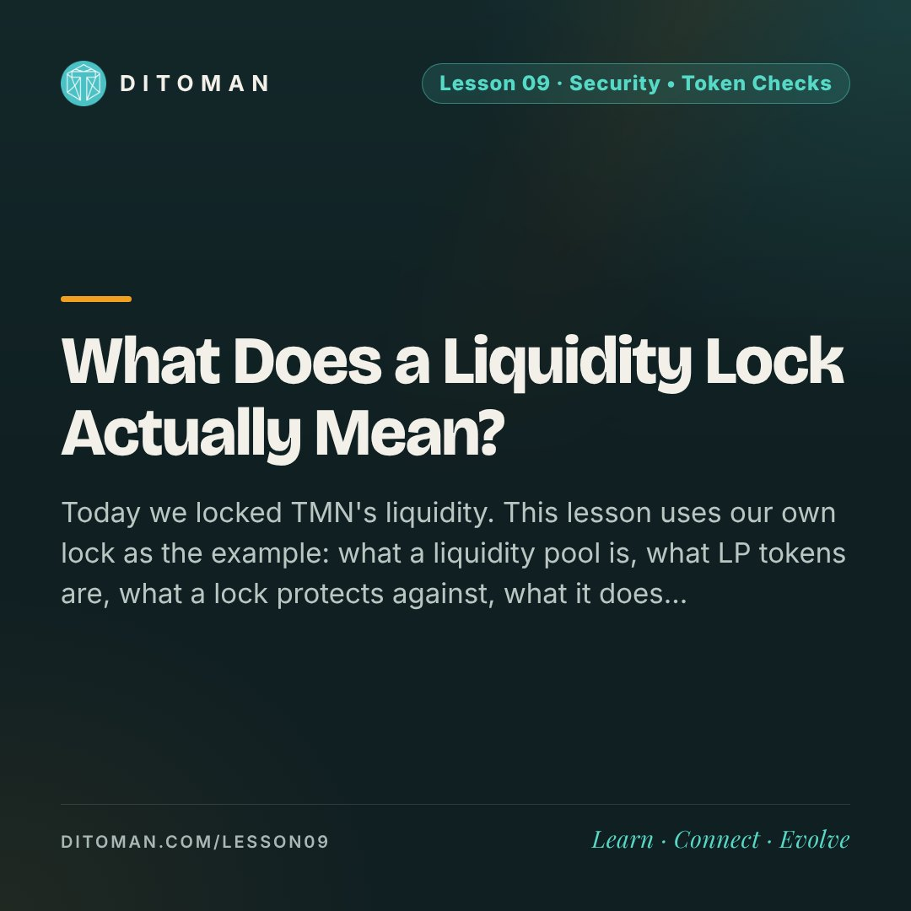

流动性锁定究竟意味着什么？
قفل لیکوئیدیتی واقعاً یعنی چه؟
今天我们锁定了 TMN 的流动性。本课以我们自己的锁定为例：什么是流动性池、什么是 LP 代币、锁定能防范什么、不能证明什么，以及如何自行检查任何一个锁定。
امروز لیکوئیدیتی TMN را قفل کردیم. این درس قفل خود ما را نمونه قرار میدهد: استخر لیکوئیدیتی چیست، توکن LP چیست، قفل از چه چیزی محافظت میکند، چه چیزی را ثابت نمیکند، و هر قفلی را خودتان چطور بررسی کنید.
课程内容
محتوای درس
可用英文或波斯文阅读本课。这一结构为未来的测验、积分、声誉和奖励系统而设计。
درس را به فارسی یا انگلیسی بخوانید. این ساختار برای آزمونک، امتیاز، اعتبار و پاداشهایی طراحی شده که در آینده اضافه میشوند.
在第05课中，我们列出了在接触任何代币之前要做的五项检查。第五项是：是否有真实的流动性，是否已锁定？今天我们为自己的代币做了这件事。本课解释我们做了什么以及它意味着什么。
01. 什么是流动性
要让代币能在 PancakeSwap 这样的去中心化交易所被买卖，就必须有人把两样东西并排放进一个池子：代币本身，以及人们已经认可其价值的东西，比如 BNB。买家放入 BNB、取走代币；卖家则相反。
这个池子就是代币的流动性。没有它，就无处交易。
02. LP 代币是一张收据
向池子添加资金的人会收到 LP 代币（流动性提供者代币）。可以把它看作一张收据。持有收据的人可以随时把它交还给池子，取走自己那份 BNB 和代币。
03. 风险：撤池跑路（rug pull）
如果项目团队持有这张收据，他们就可以在一夜之间把池子抽空。持有者手里只剩下再也卖不出去的代币。这被称为 rug pull，是人们在小型代币上亏钱最常见的方式之一。
04. 锁定做了什么
锁定是把 LP 代币放入一个单独的智能合约，并设定解锁日期。在那之前，没有人能把它们取回，包括锁定它们的人。PinkLock、UNCX 和 Team Finance 等锁仓服务会把每一次锁定公开为记录，任何人都可以查验。
05. 我们对 TMN 做了什么
2026年10月29日，我们把项目主钱包中全部的 TMN/BNB LP 代币锁进了 BNB Smart Chain 上的 PinkLock：先是 0.2277 LP，随后在当天追加了更多 BNB 流动性后，来自 PancakeSwap V2 池的总计 0.3461 LP。解锁日期是2027年10月29日。记录是公开的： PinkLock 记录 #2089923.
这是在此前步骤之后进行的：合约所有权已放弃，因此永远无法再铸造新的 TMN，并且原始供应量的10%已被移除。
06. 锁定不能证明什么
锁定消除了一种特定风险：被锁定的流动性在解锁日期之前被抽走。它不能证明代币有价值、项目会成功或价格会上涨。
它也无法回答其他几项检查。TMN 的供应仍然集中在创始人钱包中，你可以在 BscScan 上看到。我们公开说明这一点，你对任何代币也都应当检查这一点，包括我们的。
07. 如何自己检查任何锁定
打开锁定记录并确认四件事：交易对地址与代币真实的池子一致、锁定数量、解锁日期，以及该数量占整个池子的比例。如果锁定下周就到期，或只覆盖池子的一小部分，那意义就很小。
本课要点
信任不是承诺，而是你可以检查的东西。不要相信，去验证。
در درس پنجم، پنج بررسی را گفتیم که قبل از دست زدن به هر توکنی باید انجام داد. بررسی پنجم این بود: آیا لیکوئیدیتی واقعی دارد و آیا قفل شده؟ امروز همین کار را برای توکن خودمان انجام دادیم. این درس توضیح میدهد چه کردیم و یعنی چه.
۰۱. لیکوئیدیتی چیست
برای اینکه یک توکن در صرافی غیرمتمرکزی مثل PancakeSwap خرید و فروش شود، کسی باید دو چیز را کنار هم در یک استخر بگذارد: خود توکن، و چیزی که مردم برایش ارزش قائلاند مثل BNB. خریدار BNB میگذارد و توکن برمیدارد؛ فروشنده برعکس.
این استخر، لیکوئیدیتی توکن است. بدون آن، جایی برای معامله وجود ندارد.
۰۲. توکن LP یک رسید است
هر کسی که به استخر پول اضافه کند، «توکن LP» میگیرد. آن را مثل یک رسید در نظر بگیرید. صاحب رسید هر وقت بخواهد میتواند آن را به استخر پس بدهد و سهمش از BNB و توکن را بیرون بکشد.
۰۳. خطر: راگپول
اگر رسید دست تیم پروژه باشد، میتوانند یکشبه استخر را خالی کنند. دارندگان توکن با توکنهایی میمانند که دیگر قابل فروش نیست. به این «راگپول» میگویند و یکی از رایجترین راههای ضرر کردن روی توکنهای کوچک است.
۰۴. قفل چه میکند
قفل، توکنهای LP را در یک قرارداد هوشمند جداگانه با تاریخ آزاد شدن مشخص میگذارد. تا آن تاریخ هیچکس، حتی کسی که قفل کرده، نمیتواند آنها را پس بگیرد. قفلکنندههایی مثل PinkLock، UNCX و Team Finance هر قفل را بهصورت رکورد عمومی منتشر میکنند تا هر کسی بتواند بررسیاش کند.
۰۵. ما با TMN چه کردیم
در ۷ آبان ۱۴۰۵ (۲۹ اکتبر ۲۰۲۶) همهی توکنهای LP استخر TMN/BNB را که در کیفپول اصلی پروژه بود در PinkLock روی شبکهی BNB قفل کردیم: اول ۰.۲۲۷۷ LP، و همان روز پس از افزودن BNB تازه به استخر، در مجموع ۰.۳۴۶۱ LP از استخر PancakeSwap V2. تاریخ آزاد شدن ۷ آبان ۱۴۰۶ (۲۹ اکتبر ۲۰۲۷) است. رکورد عمومی است: رکورد PinkLock شمارهی ۲۰۸۹۹۲۳.
این قدم بعد از قدمهای قبلی است: مالکیت قرارداد رنانس شده، پس هیچ TMN تازهای هرگز ساخته نمیشود، و ۱۰٪ عرضهی اولیه حذف شده است.
۰۶. قفل چه چیزی را ثابت نمیکند
قفل یک خطر مشخص را حذف میکند: اینکه لیکوئیدیتی قفلشده قبل از تاریخ آزاد شدن بیرون کشیده شود. ثابت نمیکند که توکن ارزش دارد، پروژه موفق میشود یا قیمت بالا میرود.
بررسیهای دیگر را هم جواب نمیدهد. عرضهی TMN هنوز در کیفپولهای بنیانگذاران متمرکز است و این را در BscScan میتوانید ببینید. ما این را صریح میگوییم، و شما باید برای هر توکنی، از جمله توکن ما، بررسیاش کنید.
۰۷. چطور هر قفلی را خودتان بررسی کنید
رکورد قفل را باز کنید و چهار چیز را چک کنید: آدرس استخر با استخر واقعی توکن یکی باشد، مقدار قفلشده، تاریخ آزاد شدن، و اینکه این مقدار چه سهمی از کل استخر است. قفلی که هفتهی بعد باز میشود یا فقط بخش کوچکی از استخر را پوشش میدهد، معنای زیادی ندارد.
چه برداشتی کنیم
اعتماد یک قول نیست؛ چیزی است که میشود بررسیاش کرد. اعتماد نکن؛ بررسی کن.
把第五项检查用在 TMN 上
بررسی پنجم روی TMN
第05课显示 TMN 未通过五项检查中的两项：供应集中、没有锁定流动性。有了今天的锁定，项目主钱包中持有的流动性已锁定至2027年10月。供应集中问题仍未解决，我们会随其变化持续报告。
درس پنجم نشان داد که TMN در دو بررسی از پنج بررسی رد میشد: عرضهی متمرکز و لیکوئیدیتی قفلنشده. با قفل امروز، لیکوئیدیتی کیفپول اصلی پروژه تا اکتبر ۲۰۲۷ قفل است. تمرکز عرضه هنوز مسئلهای باز است و هر تغییری در آن را گزارش میکنیم.
核心概念
مفاهیم کلیدی
- 流动性池
- LP 代币即收据
- 撤池跑路（Rug pull）
- 流动性锁定与解锁日期
- 公开的锁定记录
- 锁定不能证明什么
- استخر لیکوئیدیتی
- توکن LP بهعنوان رسید
- راگپول
- قفل لیکوئیدیتی و تاریخ آزاد شدن
- رکوردهای عمومی قفل
- آنچه یک قفل ثابت نمیکند
学习目标
اهداف یادگیری
- 解释什么是流动性池以及代币为什么需要它。
- 描述 LP 代币代表什么。
- 解释撤池跑路是如何发生的。
- 读懂一条锁定记录并检查其交易对、数量、日期和占池比例。
- 说出锁定不能告诉你关于代币的哪些事。
- توضیح دهید استخر لیکوئیدیتی چیست و چرا هر توکن به آن نیاز دارد.
- شرح دهید توکنهای LP نشاندهندهی چه چیزی هستند.
- توضیح دهید راگپول چطور اتفاق میافتد.
- رکورد یک قفل را بخوانید و جفتارز، مقدار، تاریخ و سهم آن از استخر را بررسی کنید.
- بگویید یک قفل چه چیزهایی را دربارهی توکن به شما نمیگوید.
未来测验题库
بانک پرسشهای آزمونک آینده
这些问题是为未来的 Ditoman 测验与参与系统准备的。它们日后可能用于学习积分、声誉层级，以及可能的 TMN 奖励资格。
این پرسشها برای سامانهی آزمونک و مشارکت آیندهی دیتومان آماده شدهاند. ممکن است بعدها مبنای امتیاز یادگیری، لایههای اعتبار و احتمالاً شرایط دریافت پاداش TMN شوند.
第1题
پرسش ۱
LP 代币代表什么？
توکنهای LP نشاندهندهی چه چیزی هستند؟
A. 代币所属公司的一份股份
الف. سهمی از شرکت سازندهی توکن
B. 向流动性池添加资金的收据
ب. رسیدی برای پولی که به استخر لیکوئیدیتی اضافه شده
C. 交易费折扣
ج. تخفیف کارمزد معامله
D. 一张治理投票权
د. حق رأی در ادارهی پروژه
正确答案：B
پاسخ درست: ب
第2题
پرسش ۲
什么是 rug pull？
راگپول چیست؟
正确答案：持有 LP 代币的人撤走流动性，使持有者无法卖出。
پاسخ درست: وقتی کسی که توکنهای LP دستش است لیکوئیدیتی را بیرون میکشد و دارندگان توکن دیگر نمیتوانند بفروشند.
第3题
پرسش ۳
判断：流动性锁定证明代币价格会上涨。
درست یا نادرست: قفل لیکوئیدیتی ثابت میکند که قیمت توکن بالا میرود.
正确答案：错误。它只能防止被锁定的流动性在解锁日期前被撤走。
پاسخ درست: نادرست. قفل فقط جلوی بیرون کشیدن لیکوئیدیتی قفلشده را تا تاریخ آزاد شدن میگیرد.
第4题
پرسش ۴
在锁定记录上你应该检查以下哪项？
در رکورد یک قفل، کدامیک را باید بررسی کنید؟
A. 交易对地址
الف. آدرس جفتارز
B. 锁定数量及其占池子的比例
ب. مقدار قفلشده و سهم آن از استخر
C. 解锁日期
ج. تاریخ آزاد شدن
D. 以上全部
د. همهی موارد
正确答案：D
پاسخ درست: د
第5题
پرسش ۵
TMN 锁定的流动性何时解锁？
لیکوئیدیتی قفلشدهی TMN چه زمانی آزاد میشود؟
A. 2026年10月29日
الف. ۲۹ اکتبر ۲۰۲۶
B. 2027年10月29日
ب. ۲۹ اکتبر ۲۰۲۷
C. 永不
ج. هرگز
D. 创始人想什么时候就什么时候
د. هر وقت بنیانگذاران بخواهند
正确答案：B
پاسخ درست: ب
Instagram 摘要
خلاصه در اینستاگرام
本课最早发布在 Ditoman 的 Instagram 上。Instagram 版本提供简短的图文摘要，而本页提供完整的学习版本。
خلاصهی تصویری این درس ابتدا در اینستاگرام دیتومان منتشر شد. نسخهی اینستاگرام یک معرفی کوتاه و تصویری است و این صفحه نسخهی کامل آموزشی آن است.